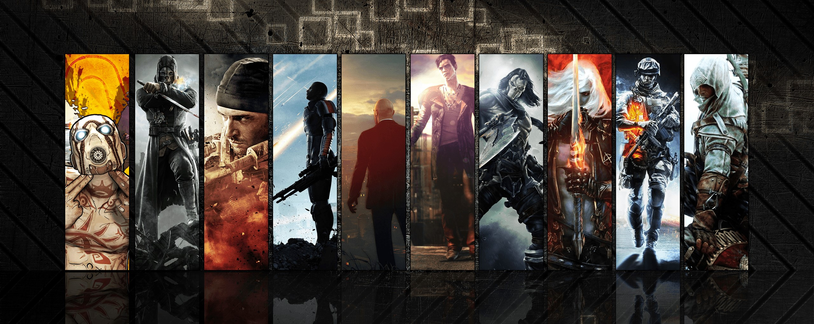

Rejoins nous !
Game Lauch Gamer est une association loi 1901 créée en 2023 par des passionés du jeu vidéo.
Notre objectif est de créer des LANs rassemblant des amateurs et des débutants dans de multiple univers de jeu vidéo.
Pour voir nos prochains évèvements, nous vous invitons à consulter notre page évèvements.
Notre objectif est de créer des LANs rassemblant des amateurs et des débutants dans de multiple univers de jeu vidéo.
Pour voir nos prochains évèvements, nous vous invitons à consulter notre page évèvements.